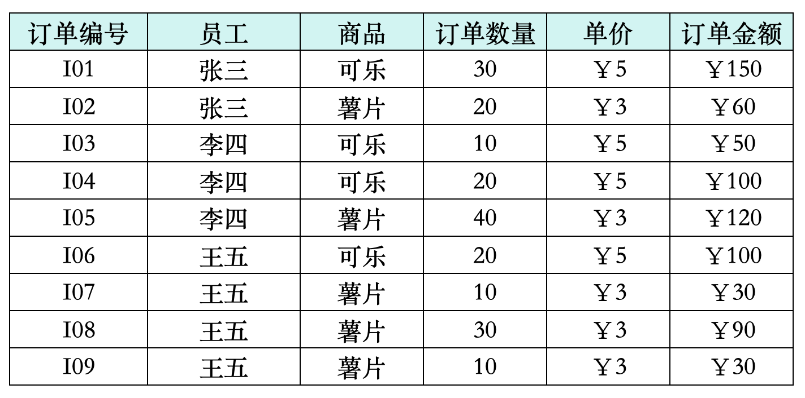
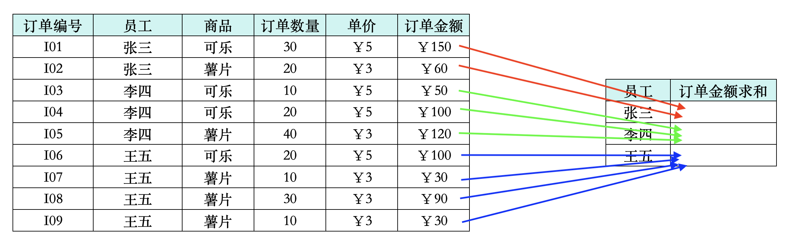
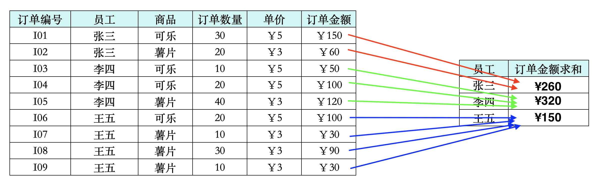
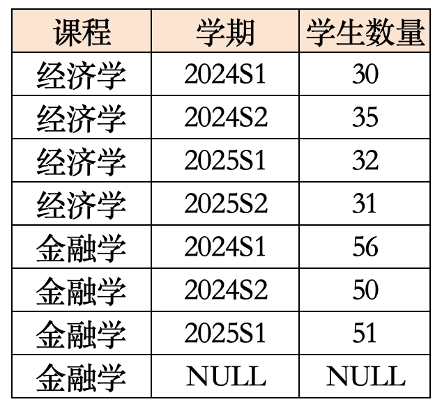
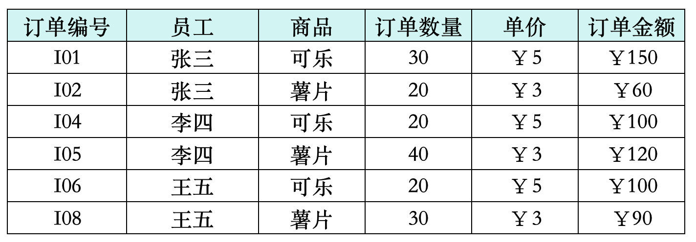
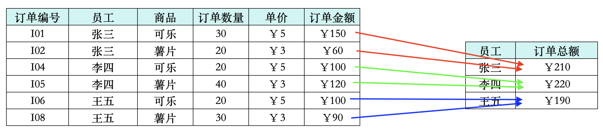
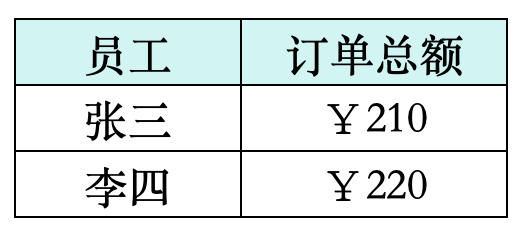

Topic 2.4 - GROUP BY 语句与数据聚合运算¶
1. 基础数据聚合运算¶
(1) 聚合运算的概念¶
在 SQL 中，我们可以将不同行的数据放在一起进行运算，这就是聚合运算的概念。
在正式开始 SQL 聚合运算的学习之前，我们先来跟大家理清聚合运算的逻辑：
- 比方说我有以下一个表格：

- 在这个表格中，我们按员工来分组，将每个员工的销售金额数据放在一起：

- 如果我们是在 SQL 中操作的，SQL 就会问你，你把同一员工的数据放在一起了，放在一起之后干什么呢？这时候我们就要告诉SQL，我们要对同一员工的销售额数据放在一起，求个和：

这个就是聚合运算的基本逻辑，其核心有两大要素：
- 按照什么分组
- 分组之后，把聚在一起的数据进行什么样的运算
(2) SQL 中的聚合函数¶
在 SQL 中，聚合运算的要使用 GROUP BY 语句来实现：
GROUP BY语句的语法格式是：
SELECT 分组依据列, 聚合函数(列) AS 聚合计算别名
FROM 表名
WHERE 条件
GROUP BY 分组依据列
ORDER BY 分组依据列 或者 聚合计算别名
- 其中，
分组依据列是我们要按照哪个列来进行分组的列，聚合函数(列)是我们要对分组后的数据进行什么样的运算的函数 - 在 SQL 中，常用的聚合函数有以下几种：
| 聚合函数 | 作用 |
|---|---|
| COUNT(*) | 聚合在一起的数据中，有多少行数据 |
| COUNT(字段) | 聚合在一起的数据中，字段不为 NULL 的行有多少行 |
| SUM(字段) | 聚合在一起的数据之和 |
| AVG(字段) | 聚合在一起的数据的平均值 |
| MAX(字段) | 聚合在一起的数据的最大值 |
| MIN(字段) | 聚合在一起的数据的最小值 |
在这当中，有个特殊的聚合函数是 COUNT 函数：
-
首先来说，
COUNT和其他函数不一样的地方在于，这个函数里面可以填一个星号*，也可以填一个字段名，并且这个字段可以是任何数据类型，其他的聚合函数只能填数值类型的字段 -
接下来我们说一下
COUNT(*)和COUNT(字段)的区别：COUNT(*)是统计聚合在一起的数据中有多少行数据，不管数据中有没有 NULL 值COUNT(字段)是统计聚合在一起的数据中，字段不为 NULL 的行有多少行数据- 这两种写法的区别在于，
COUNT(*)会把 NULL 值也算在内，而COUNT(字段)则会把 NULL 值排除在外
-
我们来看下面这个例子：

-
在这个表格中：
COUNT(*)的结果是：经济学 4 & 金融学 4，因为这个表格中有 4 行数据的专业是经济学，4 行数据的专业是金融学，不管这些行数据的字段有没有 NULL 值COUNT(学期)的结果是：经济学 4 & 金融学 3，因为这个表格中有 4 行数据的专业是经济学，并且这 4 行数据的学期字段都不为 NULL；而金融学有 4 行数据，但是其中有 1 行数据的学期字段为 NULL，所以金融学的结果是 3COUNT(学生数量)的结果是：经济学 4 & 金融学 3，同样的道理，因为这个表格中有 4 行数据的专业是经济学，并且这 4 行数据的学生数量字段都不为 NULL；而金融学有 4 行数据，但是其中有 1 行数据的学生数量字段为 NULL，所以金融学的结果是 3- 注意，尽管
学生数量这个字段是数值型的，但是我们在使用COUNT函数的时候，并不对这个字段进行数值运算，而是把它当做一个普通的字段来统计不为 NULL 的行数，所以COUNT(学生数量)的结果和COUNT(学期)的效果是一样的
我们在 Chinook 数据库中，来练习一下 SQL 中的聚合运算：
- 在 Invoice 表中，我们按照 CustomerId 来分组，并且按照 Total 列来求和与求平均：
%%sql
SELECT
CustomerId,
SUM(Total) AS Total_Sales,
AVG(Total) AS Average_Sales
FROM Invoice
GROUP BY CustomerId
ORDER BY Average_Sales DESC
| | CustomerId | Total_Sales | Average_Sales |
|:----|:-----------|:-------------|:---------------|
| 0 | 6 | 49.62 | 7.088571 |
| 1 | 26 | 47.62 | 6.802857 |
| 2 | 57 | 46.62 | 6.660000 |
| 3 | 45 | 45.62 | 6.517142 |
| 4 | 46 | 45.62 | 6.517142 |
| 5 | 37 | 43.62 | 6.231428 |
| ... | ... | ... | ... |
| 54 | 49 | 37.62 | 5.374285 |
| 55 | 50 | 37.62 | 5.374285 |
| 56 | 41 | 37.62 | 5.374285 |
| 57 | 38 | 37.62 | 5.374285 |
| 58 | 47 | 37.62 | 5.374285 |
- 在 Album 表中，我们按照 ArtistId 来分组，数一下每个 ArtistId 有多少张专辑：
%%sql
SELECT
ArtistId,
COUNT(*) AS Album_Count1,
COUNT(Title) AS Album_Count2
FROM Album
GROUP BY ArtistId
| | ArtistId | Album_Count1 | Album_Count2 |
|:----|:---------|:--------------|:--------------|
| 0 | 1 | 2 | 2 |
| 1 | 2 | 2 | 2 |
| 2 | 3 | 1 | 1 |
| 3 | 4 | 1 | 1 |
| 4 | 5 | 1 | 1 |
| 5 | 6 | 2 | 2 |
| .. | ... | ... | ... |
| 199 | 271 | 1 | 1 |
| 200 | 272 | 1 | 1 |
| 201 | 273 | 1 | 1 |
| 202 | 274 | 1 | 1 |
| 203 | 275 | 1 | 1 |
- 在 Track 表中，我们按照 AlbumId 来分组，先用数一数每个专辑有几首歌，再对
Milliseconds列进行求和并除以 60000，来计算每个专辑的总分钟数，再对UnitPrice列进行求平均：
%%sql
SELECT
AlbumId,
COUNT(*) AS Track_Count,
SUM(Milliseconds) / 60000 AS Total_Milliseconds,
AVG(UnitPrice) AS Average_UnitPrice
FROM Track
GROUP BY AlbumId
| | AlbumId | Track_Count | Total_Milliseconds | Average_UnitPrice |
|:----|:--------|:------------|:-------------------|:------------------|
| 0 | 261 | 17 | 657 | 1.99 |
| 1 | 23 | 34 | 131 | 0.99 |
| 2 | 238 | 14 | 65 | 0.99 |
| 3 | 46 | 13 | 75 | 0.99 |
| 4 | 215 | 14 | 59 | 0.99 |
| 5 | 69 | 13 | 60 | 0.99 |
| ... | ... | ... | ... | ... |
| 342 | 151 | 14 | 78 | 0.99 |
| 343 | 194 | 16 | 68 | 0.99 |
| 344 | 200 | 11 | 44 | 0.99 |
| 345 | 100 | 9 | 40 | 0.99 |
| 346 | 343 | 1 | 4 | 0.99 |
2. 按多列进行分组¶
(1) 多列分组的概念¶
在 SQL 中，我们不仅可以按照一列来进行分组，还可以按照多列来进行分组：
- 其实这个效果和我们之前讲的
SELECT DISTINCT语句的逻辑是一样的： - 比方说我们有以下这个表格：
-
在这个表格中：
- 如果我们按照
员工这一列来进行分组，那么得到三个分组：张三、李四、王五 - 如果我们按照
商品这一列来进行分组，那么得到两个分组：可乐、薯片 - 如果我们按照
员工和商品这两列来进行分组，那么得到六个分组：(张三, 可乐)、(张三, 薯片)、(李四, 可乐)、(李四, 薯片)、(王五, 可乐)、(王五, 薯片)
- 如果我们按照
(2) SQL 中的多列分组¶
在 SQL 中，我们按照多列来进行分组的语法格式是：
SELECT 分组依据列1, 分组依据列2, ..., 聚合函数(列) AS 聚合计算别名
FROM 表名
WHERE 条件
GROUP BY 分组依据列1, 分组依据列2, ...
ORDER BY 分组依据列1, 分组依据列2, ... 或者 聚合计算别名
我们在 Chinook 数据库中，来练习一下 SQL 中的多列分组：
- 在 Invoice 表中，我们先按照 BillingCity 来分组，并且按照 Total 列来求和：
%%sql
SELECT
BillingCity,
SUM(Total) AS Total_Sales
FROM Invoice
GROUP BY BillingCity
ORDER BY Total_Sales DESC
| | BillingCity | Total_Sales |
|:---|:--------------|:------------|
| 0 | Prague | 90.24 |
| 1 | Mountain View | 77.24 |
| 2 | Paris | 77.24 |
| 3 | São Paulo | 75.24 |
| 4 | London | 75.24 |
| 5 | Berlin | 75.24 |
| .. | ... | ... |
| 48 | Stuttgart | 37.62 |
| 49 | Toronto | 37.62 |
| 50 | Tucson | 37.62 |
| 51 | Porto | 37.62 |
| 52 | Bangalore | 36.64 |
- 接着，我们在 Invoice 表中，先按照 BillingCity 和 BillingCountry 来分组，并且按照 Total 列来求和：
%%sql
SELECT
BillingCity,
BillingCountry,
SUM(Total) AS Total_Sales
FROM Invoice
GROUP BY BillingCity, BillingCountry
ORDER BY Total_Sales DESC
| | BillingCity | BillingCountry | Total_Sales |
|:----|:--------------|:---------------|:-------------|
| 0 | Prague | Czech Republic | 90.24 |
| 1 | Paris | France | 77.24 |
| 2 | Mountain View | USA | 77.24 |
| 3 | London | United Kingdom | 75.24 |
| 4 | Berlin | Germany | 75.24 |
| 5 | São Paulo | Brazil | 75.24 |
| ... | ... | ... | ... |
| 48 | Boston | USA | 37.62 |
| 49 | Tucson | USA | 37.62 |
| 50 | Reno | USA | 37.62 |
| 51 | New York | USA | 37.62 |
| 52 | Bangalore | India | 36.64 |
(3) 多列分组的注意事项¶
在 SQL 中，我们按照多列来进行分组的时候，有一个很重要的注意事项：
- 出现在
SELECT语句中的列，必须要么出现在GROUP BY语句中，要么被聚合函数包裹起来，否则 SQL 就会报错 - 这个注意事项掌握明白了，
GROUP BY语句就不难了，因为我们在写GROUP BY语句的时候，基本上就是按照这个注意事项来写的
比方说我们有以下这个表格：
在上面这个表格中，我们写这样一个 SQL 语句：
SELECT
员工,
销售数量,
SUM(销售额) AS 销售总额
FROM 销售数据
GROUP BY 员工
-
这个 SQL 语句会报错，因为
销售数量这个列既没有出现在GROUP BY语句中，也没有被聚合函数包裹起来，所以 SQL 不知道我们要对销售数量这个列进行什么样的运算，所以就会报错 -
正确的处理方法是，
销售数量这一列是数值类型的，我们可以对它放在各种集合运算函数里
还是上面这个表格，我们再写这样一个 SQL 语句：
SELECT
员工,
商品,
SUM(销售额) AS 销售总额
FROM 销售数据
GROUP BY 员工
- 这个 SQL 语句同样会报错，因为
商品这个列既没有出现在GROUP BY语句中，也没有被聚合函数包裹起来，所以 SQL 不知道我们要对商品这个列进行什么样的运算，所以就会报错 - 正确的处理方法是，
商品这一列是文本类型的，我们只能把它放在COUNT函数里，来统计每个员工卖了多少种商品，或者把它放在GROUP BY语句里，来按照员工和商品这两列来进行分组
3. 聚合运算后的数据过滤¶
之前我们在讲 WHERE 语句的时候，提到过 WHERE 语句是用来对原始数据进行过滤的，无法将计算得来的字段作为过滤条件：
- 例如，我们写以下 SQL 是会报错的：
SELECT
TrackId,
UnitPrice * 1.1 AS New_UnitPrice
FROM Track
WHERE New_UnitPrice > 2.0
-
报错的原因是，
WHERE语句无法将计算得来的字段New_UnitPrice作为过滤条件，所以 SQL 就会报错 -
要想过滤掉
New_UnitPrice大于 2.0 的结果，我们需要把原始的计算式UnitPrice * 1.1直接放在WHERE语句中：
SELECT
TrackId,
UnitPrice * 1.1 AS New_UnitPrice
FROM Track
WHERE UnitPrice * 1.1 > 2.0
这一点对于聚合运算来说也是一样的：计算来的字段不能用来筛选，筛选要用原表达式，但是除此之外，在 SQL 中，聚合运算的地位比较特殊：
- 聚合运算得到的产物可以用来过滤数据
- 但是过滤聚合运算得到的产物，不能使用
WHERE语句，而是要使用HAVING语句 HAVING语句的语法格式是：
SELECT 分组依据列, 聚合函数(列) AS 聚合计算别名
FROM 表名
WHERE 条件
GROUP BY 分组依据列
HAVING 聚合函数(列) > 某个值
ORDER BY 分组依据列 或者 聚合计算别名
这个语句中，又有 WHERE 语句又有 HAVING 语句，大家可能会觉得有点混乱，我们来理清一下：
WHERE语句是用来对原始数据进行过滤的，无法将计算得来的字段作为过滤条件HAVING语句是用来对聚合运算得到的产物进行过滤的，可以将计算得来的字段作为过滤条件- 一句话总结，如果在一个 SQL 语句中，既有
WHERE语句又有HAVING语句，那么WHERE是先选后算，HAVING是先算后选
我们来看这个表格：
- 在上面这个表格中，我们写以下 SQL 语句：
SELECT
员工,
SUM(销售额) AS 销售总额
FROM 销售数据
WHERE 销售数量 >= 20
GROUP BY 员工
HAVING SUM(销售额) > 200
ORDER BY 销售总额 DESC
- 首先，这个语句会先按照
WHERE语句中的条件销售数量 >= 20来对原始数据进行过滤，过滤掉销售数量小于 20 的行数据：

- 之后，这个语句会按照
GROUP BY语句中的条件员工来对过滤后的数据进行分组，并且按照SUM(销售额)来计算每个员工的销售总额：

- 最后，这个语句会按照
HAVING语句中的条件销售总额 > 200来对聚合运算得到的产物进行过滤，过滤掉销售总额小于等于 200 的结果：

我们在 Chinook 数据库中，来练习一下 SQL 中的 HAVING 语句：
- 在 Invoice 表中，我们按照 BillingCity 来分组，并且按照 Total 列来求和，最后用
HAVING语句来过滤掉总销售额大于 50 的结果：
%%sql
SELECT
BillingCity,
SUM(Total) AS Total_Sales
FROM Invoice
GROUP BY BillingCity
HAVING SUM(Total) > 50
ORDER BY Total_Sales DESC
| | BillingCity | Total_Sales |
|:--|:--------------|:-------------|
| 0 | Prague | 90.24 |
| 1 | Mountain View | 77.24 |
| 2 | Paris | 77.24 |
| 3 | Berlin | 75.24 |
| 4 | London | 75.24 |
| 5 | São Paulo | 75.24 |
- 在 Track 表中，按照 AlbumId 来分组，先用数一数每个专辑有几首歌，再对
Milliseconds列进行求和并除以 60000，来计算每个专辑的总分钟数，最后用HAVING语句来过滤掉总分钟数大于 40 的结果：
%%sql
SELECT
AlbumId,
COUNT(*) AS Track_Count,
SUM(Milliseconds) / 60000 AS Total_Minutes
FROM Track
GROUP BY AlbumId
HAVING SUM(Milliseconds) / 60000 > 40
ORDER BY Total_Minutes DESC
| | AlbumId | Track_Count | Total_Minutes |
|:----|:--------|:-------------|:---------------|
| 0 | 229 | 26 | 1177 |
| 1 | 253 | 24 | 1170 |
| 2 | 230 | 25 | 1080 |
| 3 | 231 | 24 | 1054 |
| 4 | 228 | 23 | 996 |
| 5 | 227 | 19 | 879 |
| ... | ... | ... | ... |
| 228 | 133 | 9 | 41 |
| 229 | 188 | 11 | 41 |
| 230 | 254 | 1 | 41 |
| 231 | 205 | 10 | 41 |
| 232 | 144 | 10 | 41 |